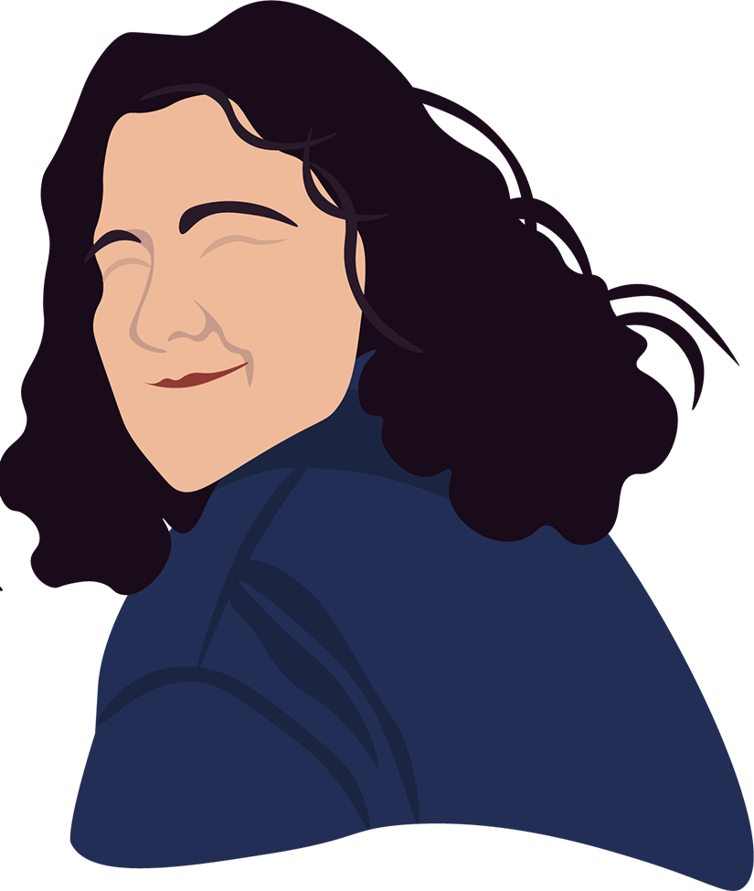

(Hover to see Linda IRL)
Linda Badgley is a writer and photographer from Toronto, Canada. She moved to New York City in 2017 to pursue both a BA in Creative Writing and a
BFA in Photography with a minor in sociology. After studying filmmaking for four years in high school, Linda found her passion in film photography and writing.
With influences ranging from Frank O’Hara to Brendan Behan, Linda writes with a desire to document her experience in a world that is constantly changing.
The intersection of art and the political has always stood out to Linda, as that is where the true power of art arises. As a writer for Moonbite, she strives to
find that intersection.
One of the main sources of inspiration for Linda is music, as her vast range of music influences her work. She was raised listening to a wide range of music,
from folk to experimental, and has carried that love with her into her young adult years.